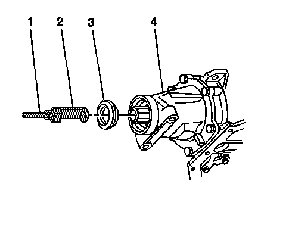
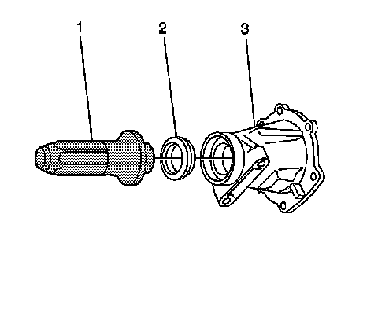

Transmission Extension Housing Rear Oil Seal Replacement
Transmission Extension Housing Rear Oil Seal Replacement
Tools Required
^ J 41505 Output Shaft Seal Installer
^ J 6125-1B Slide Hammer
^ J 23129 Universal Seal Remover
^ J 36850 Transjel(R) Lubricant
Removal Procedure

1. Place a drain pan under the vehicle.
2. Remove the propeller shaft.
3. Using J 6125-1B (1) and J 23129 (2), remove the output shaft seal (3) from the extension housing (4).
4. Inspect the case extension housing for damage. Replace the extension housing if necessary.
Installation Procedure

1. Lubricate the inside diameter of the NEW seal with J 36850.
2. Using J 41505 (1) and a soft faced mallet, install the seal (2).
3. Install the seal (2) to the extension housing (3).
4. Install the propeller shaft.
5. Remove the drain pan and lower the vehicle.
6. Fill the transmission to the proper level with DEXRON(R) III transmission fluid. Refer to Transmission Fluid Checking.